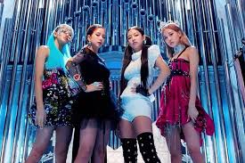

I have been all over my head
Wonderin' if I gotta try and pretend, 나도 잘 모르는 날
누가 알아주길 기대하는 내 모습을 찾을까 두려워 (워)
저 빛이 더 밝아질수록
내 그림자도 길어지는데
너무 눈이 부셔올 때
난 뒤를 볼 수 있을까?
온 세상이 바뀌어가도, 아직 나는 그대론 걸
내가 걸어가는 이 길을 꿈꾸던
그때 그대로, 그때 그대로, 내 매일을 춤추던
처음 그 자리에 남아 있는 걸
But you'll never know unless you walk in my shoes
you'll never know 엉켜버린 내 끈
'Cause everybody sees what they wanna see
It's easier to judge me than to believe
깊이 숨겼던 낡은 생각들
가끔 나를 잡고 괴롭히지만
그럴수록, I'ma shine, baby
You know they ain't got a shot on me
가라앉으면 안 돼, 나도 잘 알아
땅만 보는 채론 날 순 없어
구름 (구름) 건너편엔 아직 밝은 해
내가 그려왔던 그림 속에 찢어버린 곳들까지
다 비워내고 웃을 수 있게
보기 싫었던 나와 마주할래, eh
난 기억해, so I'll be okay
파란 내 방 한가득 꽃이 피게
I'll always be waiting
but you'll never know unless you walk in my s
You'll never know 엉켜버린 내 끈
'Cause everybody sees what they wanna see
It's easier to judge me than to believe
깊이 숨겼던 낡은 생각들
가끔 나를 잡고 괴롭히지만
그럴수록, I'ma shine, baby
You know they ain't got a shot on me애써서 활짝 웃었던 날에 밤은 왜 더 어두울까?
It keeps bringing me down, down, down, mmm
내가 걸어가는 이 길을 꿈꾸던
그때 그대로, 그때 그대로, 내 매일을 춤추던
처음 그 자리에 남아 있는 걸
You'll never know 엉켜버린 내 끈
'Cause everybody sees what they wanna see<
깊이 숨겼던 낡은 생각들
가끔 나를 잡고 괴롭히지만
그럴수록, I'ma shine, baby
You know they ain't got a shot on me
Yorqin tabassum qilish uchun qattiq mehnat qilgan kunlarda nega tun qorong'i bo'ladi?
Bu meni pastga tushiradi,pastga tushiradi,
mmm Hamma osonlik bilan aytadigan so'zlar, ehtimol, tez orada eshitiladi
Men yetarlicha eshitganman, o‘zim bo‘lmagan narsalarni yetarlicha eshitganmanButun dunyo o'zgargan bo'lsa ham, men o'zgarishsiz qolaman
Men yurgan bu yo'lni orzu qilardim Xuddi o'sha paytdagidek, xuddi shunday, har kuni raqsga tushaman
Men u erda birinchi marta qoldim
Chunki har kim ko'rmoqchi bo'lgan narsani ko'radi
Menga ishonishdan ko'ra hukm qilish osonroq
Ba'zan ular meni tutib, qiynashadi
qanchalik ko'p bo'lsa, men porlayman, bolam
Bilasizmi, ular menga o'q otishmayapti
Yakshanba oqshomida meni karavotim yutib yubordi
Men boshimga tushdim
Ajablanarlisi shundaki, men o'zimni ko'p narsa bilmaydigan kunni ko'rsatishim kerakmi?
Kimdir sezishini kutaman deb qo'rqaman (voy)
Bu yorug'lik qanchalik yorqinroq bo'lsa
Mening soyam ham uzunroq bo'ladi
Qachonki u juda ko'zni qamashtirsa
butun dunyo o'zgargan bo'lsa ham, men o'zgarishsiz qolaman
Men yurgan bu yo'lni orzu qilardim
Xuddi o'sha paytdagidek,xuddi shunday, har kuni raqsga tushaman
Men u erda birinchi marta qoldim
Lekin mening o‘rnimda yurmaguningizcha hech qachon bila olmaysiz
Hech qachon bilmaysiz, mening chigal torlarim
Chunki har kim ko'rmoqchi bo'lgan narsani ko'radi
Menga ishonishdan ko'ra hukm qilish osonroq
chuqur yashiringan eski fikrlar
Ba'zan ular meni tutib, qiynashadi
Qanchalik ko'p bo'lsa, men porlayman, bolam
Bilasizmi, ular menga o'q otishmayapti
Cho'kmang, men buni bilaman Men faqat yerga qarab ucha olmayman
Bulutlarning narigi tomonida quyosh hali ham porloq (bulutlar)
Men chizgan rasmdagi yirtilgan joylar ham
Shunday qilib, men hammasini bo'shatib, tabassum qila olaman
Men ko'rishni istamagan odamga duch kelmoqchiman,
Men eslayman, shuning uchun men yaxshi bo'laman
Moviy xonamda gullar ochsin
Men doim kutaman
Lekin mening o'rnimda yurmaguningizcha hech qachon bilmaysiz
Hech qachon bilmaysiz, mening chigal torlarim
Chunki har kim ko'rmoqchi bo'lgan narsani ko'radi
Menga ishonishdan ko'ra hukm qilish osonroq
Chuqur yashiringan eski fikrlar
Ba'zan ular meni tutib, qiynashadi
Qanchalik ko'p bo'lsa, men porlayman, bolam
Bilasizmi, ular menga o'q otishmayapti
